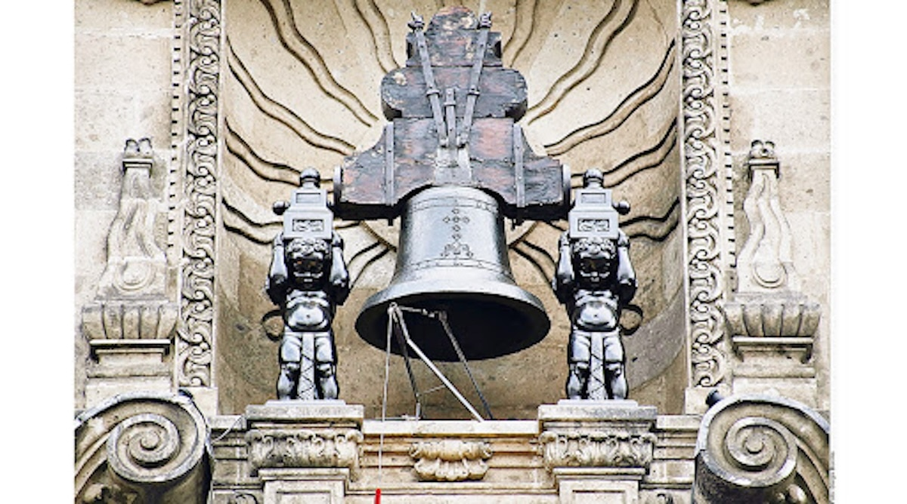

El Grito ocurrió el 15 de septiembre: Falso. El llamado a levantarse en armas de Miguel Hidalgo se dio en la madrugada del 16 de septiembre de 1810. El festejo nocturno del 15 se popularizó por tradición y por coincidir con celebraciones oficiales del Porfiriato.
La temporada de chiles en nogada: Este platillo tradicional tricolor (verde, blanco y rojo) alcanza su máxima producción y consumo precisamente durante septiembre gracias a la cosecha de ingredientes de temporada como la nuez de castilla y la granada.
Miguel Hidalgo tocó la campana: Falso. El campanero de la parroquia de Dolores, llamado José Galván, fue quien hizo sonar las campanas.

La campana viajera: La campana original que usó el cura Hidalgo en Dolores Guanajuato fue trasladada al Palacio Nacional en la Ciudad de México por órdenes de Porfirio Díaz en 1896.

México tiene dos actas de independencia: La primera acta se firmó el 28 de septiembre de 1821 declarando a México como un imperio, pero se modificó tras la caída de Agustín de Iturbide para establecer la república.